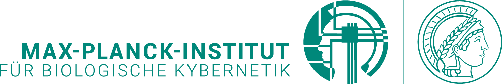
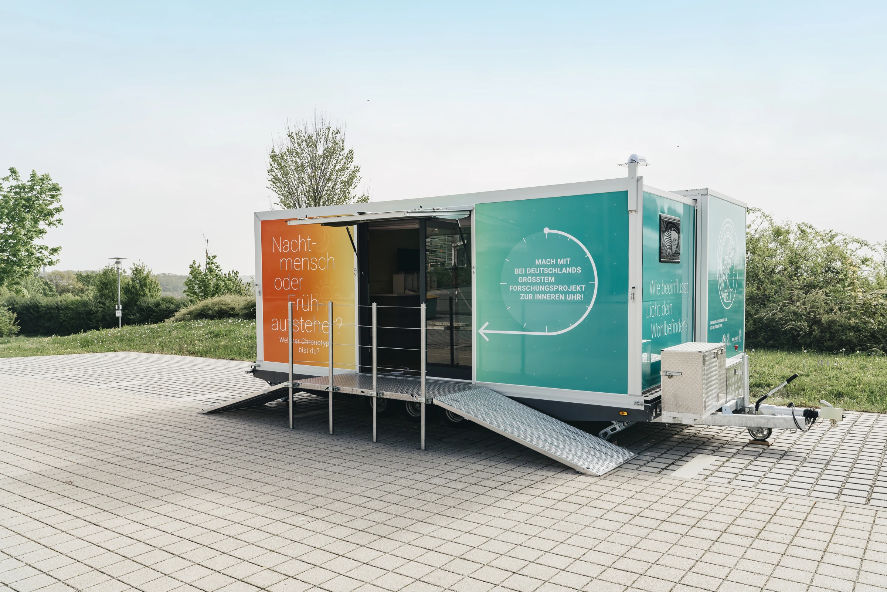

Unsere innere Uhr
Wie verändert morgendliches Licht den Takt unseres Körpers? Und welche Rolle spielen Helligkeit und Lichtfarbe?

DAS LICHTCAFÉ · TÜBINGEN
Im Lichtcafé in Tübingen wollen wir untersuchen, wie morgendliches Licht unsere innere Uhr, unseren Schlaf und unsere Aufmerksamkeit beeinflusst.
Eine geplante Studie des Max-Planck-Instituts für biologische Kybernetik.

Im Winter bekommen wir weniger Tageslicht. Was gezieltes Licht am Morgen bewirkt, möchten wir genauer verstehen.
Dafür planen wir ein „Lichtcafé“ auf dem Vorplatz des Tübinger Hauptbahnhofs. In einem umgebauten Forschungstrailer sollen Teilnehmende über zwei Wochen jeden Werktag eine Stunde unter kontrollierten Lichtbedingungen verbringen.
Wir messen ihre innere Uhr, ihren Schlaf und ihre Aufmerksamkeit vor und nach dieser Zeit. Neben der Studie sind Gespräche und kurze Vorträge geplant – für alle, die mehr über Licht erfahren möchten.
Mehr zur bisherigen WissenschaftsroadshowWir vergleichen unterschiedliche Lichtbedingungen
und erfassen, was sich dabei verändert.
Wie verändert morgendliches Licht den Takt unseres Körpers? Und welche Rolle spielen Helligkeit und Lichtfarbe?
Wie verändern sich Schlaf und Aktivität im Alltag, wenn wir regelmäßig Licht zu einer bestimmten Tageszeit erhalten?
Welche Veränderungen zeigen sich bei Konzentration, Müdigkeit und Wohlbefinden – und wie unterscheiden sie sich von Mensch zu Mensch?
02 / SO LÄUFT’S AB
So ist die Teilnahme an der Studie geplant.
Die genauen Termine geben wir noch bekannt.
Zu Beginn erfassen wir deine innere Uhr, Schlaf- und Aktivitätsmuster sowie deine Aufmerksamkeit.
Du verbringst an zehn Werktagen jeweils eine Stunde im Lichtcafé. Helligkeit und spektrale Zusammensetzung des Lichts werden gezielt eingestellt.
Wir wiederholen die Messungen und fragen nach Müdigkeit und Wohlbefinden. So vergleichen wir die Zeit vor und nach der Lichtintervention.
Zusätzlich zu den zehn Lichtterminen sind Messungen vor und nach der Intervention vorgesehen. Details zu Aufwand, Voraussetzungen und Ablauf folgen vor der Anmeldung.
03 / HÄUFIGE FRAGEN
Die wichtigsten Informationen
zur geplanten Studie.
04 / DAS FORSCHUNGSTEAM
Ein Projekt der Forschungsgruppe Translationale sensorische und zirkadiane Neurowissenschaften.
Unter der wissenschaftlichen Leitung von Prof. Dr. Manuel Spitschan am Max-Planck-Institut für biologische Kybernetik in Tübingen. Die Forschungsgruppe untersucht, wie Licht die menschliche Physiologie und das Verhalten beeinflusst.
TEILNAHME AN DER STUDIE
Die Anmeldung ist noch nicht geöffnet. Sobald Termine und Teilnahmevoraussetzungen feststehen, findest du hier den Link zum Anmeldeformular.
Anmeldung bald möglichDer Anmeldelink folgt hier, sobald die Teilnahme möglich ist.
Fragen zum Projekt? Schreib an Prof. Dr. Manuel Spitschan.
Max-Planck-Institut für biologische Kybernetik · Max-Planck-Ring 8–14 · 72076 Tübingen
Anbieterinformationen des Instituts ↗